폐기물처리산업기사 (2011-10-02 기출문제)
1과목: 폐기물개론
1. 쓰레기를 압축시켜 용적 감소율(Volume reduction)이 45%인 경우 압축비(compaction ratio)는?
- 약 1.5
- 약 1.8
- 약 2.2
- 약 2.8
(정답률: 90%)

2. 사금선별을 위해 오래전부터 사용되던 습식 선별방법은?
- Jigs
- Secators
- Trommel Screen
- Ballistic Separator
(정답률: 50%)
3. 폐기물의 입도 분석결과 입도 누적곡선상의 10%, 30%, 60%, 90%의 입경이 각각 1, 5, 10, 20mm 였다. 이 때 유효입경과 곡률계수는?
- 유효입경 10mm, 곡률계수 1.0
- 유효입경 10mm, 곡률계수 2.5
- 유효입경 1mm, 곡률계수 1.0
- 유효입경 1mm, 곡률계수 2.5
(정답률: 73%)
4. 슬러지를 농축시키는 이유와 가장 거리가 먼 것은?
- 유해물질 농도 감소
- 화학약품 투여량 감소
- 처리비용 감소
- 저장 탱크 용적 감소
(정답률: 50%)
5. 폐기물 발생량 예측방법 중 모든 인자를 시간에 대한 함수로 나타낸 후 시간에 대한 함수로 표현된 각 영향인자들 간의 상관관계를 수식화하여 예측하는 방법은?
- Trend Method
- multiple Regression model Method
- Dynamic Simulation Model method
- CORAP Model
(정답률: 100%)
6. 적환장 위치 선정 시 고려해야 할 사항으로 거리가 먼 것은?
- 주도로의 접근이 용이하고 2차 또는 보조 수송수단 연결이 쉬운 지역
- 주민의 반대가 적고 주위환경에 대한 영향이 최소인 곳
- 설치 및 작업이 쉬운 곳
- 수거하고자 하는 개별적 고형폐기물 발생지역의 하중중심에서 먼 곳
(정답률: 100%)
7. 1992년 리우데자네이로에서 가진 유엔환경개발회의에서 대두된 용어(약자)로 [친환경적이면서 지속 가능한 개발]이란 뜻을 가진 것은?
- EPSS
- ESSK
- ECCZ
- ESSD
(정답률: 100%)
8. 인구 35만 도시의 쓰레기 발생량이 1.2kg/인·일 이고, 이 도시의 쓰레기 수거율은 90%이다. 적재용량이10ton인 수거차량으로 수거한다면 아래의 조건으로 하루에 몇 대로 운반해야 하는가?
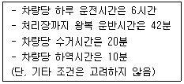
- 4대
- 6대
- 8대
- 10대
(정답률: 62%)
9. 쓰레기 10ton을 소각했더니 재의 용적이 1.14m3 발생되었다. 재의 밀도(kg/m3)는? (단, 재의 중량은 쓰레기 중량의 1/100이다.)
- 55
- 67
- 88
- 92
(정답률: 93%)
10. A도시의 폐기물 수거량이 2,000,000ton/year 이며, 수거인부는 1일 3,255명이고 수거 대상 인구는 5,000,000인이다. 그리고 수거인부의 일 평균작업시간은 5시간이라고 할 때 MHT는? (단, 1년은 365일 기준)
- 1.83MHT
- 2.97MHT
- 3.65MHT
- 4.21MHT
(정답률: 알수없음)
11. 다음 중 폐기물의 성상 분석 절차로 가장 적합한 것은?
- 밀도측정 - 물리적 조성 - 건조 - 분류(타는 물질, 안타는 물질)
- 밀도측정 - 건조 - 화학적 조성분석 - 전처리(절단 및 분쇄)
- 전처리(절단 및 분쇄) - 밀도측정 - 화학적 조성분석 - 분류(타는 물질, 안타는 물질)
- 전처리(절단 및 분쇄) - 건조 - 물리적 조성 - 발열량 측정
(정답률: 100%)
12. 3성분의 조성비에 의한 저위발열량 분석 시 3성분에 포함되지 않는 것은?
- 수분
- 고형분
- 가연분
- 회분
(정답률: 84%)
13. 다음 중 일반적으로 폐기물 파쇄에 이용되는 파쇄기와 가장 거리가 먼 것은?
- 충격파쇄기
- 전단파쇄기
- 인장파쇄기
- 압축파쇄기
(정답률: 알수없음)
14. 다음이 설명하는 폐기물 용출방법은?
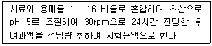
- L-test
- PP Tox
- EP Tox
- RDE
(정답률: 46%)
15. 다음은 선별법에 관한 설명이다. ( )안에 알맞은 것은?
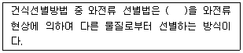
- 비자성이고 전기전도성이 우수한 금속
- 자성이고 전기전도성이 우수하지 못한 금속
- 자성이고 전기전도성이 우수한 금속
- 비자성이고 전기전도성이 우수하지 못한 금속
(정답률: 86%)
16. 3,060명이 거주하는 지역에서 한 가구당 20리터 종량제 봉투가 1주일에 2개씩 발생되고 있다. 한 가구당 2.5명이 거주할 때 지역에서 발생되는 쓰레기 발생량은?
- 16리터/인/주
- 14.6리터/인/주
- 12.3리터/인/주
- 11.2리터/인/주
(정답률: 75%)
17. 파쇄가 매립 시 갖는 이점으로 가장 거리가 먼 것은?
- 매립작업이 용이하고 압축장비가 없어도 매립작업만으로 고밀도의 매립이 가능하다.
- 곱게 파쇄하면 매립 시 복토가 필요없거나 복토요구량이 절감된다.
- 폐기물 입자의 표면적이 감소되어 미생물의 환원작용이 빨라진다.
- 매립 시 폐기물이 잘 섞이므로 냄새가 방지된다.
(정답률: 70%)
18. 사용하는 자원, 에너지, 환경에 미치는 각종 부하를 원료 자원 채취-생산-유통-사용-재사용-폐기의 전 과정에 걸쳐 가능한 정량적으로 분석 및 평가하여 현재 인류가 직면하고 있는 자원의 고갈 및 생태계의 파괴현상과 지구환경 문제 등을 근본적으로 해결하기 위한 각종 개선방안을 모색하는 기술적이며 체계적인 과정을 의미하는 것으로 가장 적합한 것은?
- LCA
- ISO 14000
- EMAS
- MEP
(정답률: 100%)
19. 다음 슬러지 내 존재하는 물의 형태 중 아주 많은 양을 차지하며 고형물질과 직접 결합해 있지 않기 때문에 농축 등의 방법으로 용이하게 분리할 수 있는 것은?
- 부착수
- 모관결합수
- 간극수
- 내부수
(정답률: 알수없음)
20. 관거를 이용한 수거의 특징으로 가장 거리가 먼 것은?
- 10km 이상의 장거리 수송에 적용이 용이하다.
- 잘못 투입된 폐기물의 회수는 곤란하다.
- 조대 폐기물은 파쇄, 압축 등의 전처리를 해야 한다.
- 화재, 폭발 등의 사고 발생 시 시스템 전체가 마비되며 대체 시스템의 전환이 필요하다.
(정답률: 100%)
2과목: 폐기물처리기술
21. 함수율 99%의 잉여 슬러지 30m3를 농축하여 함수율 95%로 했을 때 슬러지 부피는? (단, 비축은 1.0기준)
- 10m3
- 8m3
- 6m3
- 4m3
(정답률: 84%)
22. 1일 쓰레기 발생량이 29.8t인 도시의 쓰레기를 깊이 2.5m의 도랑식(trench)으로 매립하고자 한다. 쓰레기 밀도 500kg/m3, 도랑 점유율 60%, 부피 감소율 40%일 경우 1년간 필요한 부지면적은 약 몇 m2인가?
- 5200
- 6400
- 7300
- 8700
(정답률: 73%)
23. 다음 중 탄질비(C/N, 건조질량비)의 값이 가장 작은 것은?
- 소나무
- 낙엽
- 돼지 분뇨
- 소화전 활성슬러지
(정답률: 90%)
24. 유입되는 축산폐수를 1차로 25배 희석한 후 2차로 활성슬러지법으로 처리하고자 한다. 활성슬러지 공법의 BOD제거 효율은 97%, 유입 축산분뇨 BOD는 30,000mg/L라 할 때 1,2차 처리공정을 거친 처리수의 BOD는 몇 mg/L인가?
- 12
- 24
- 32
- 36
(정답률: 알수없음)
25. 다음은 로 본체의 형식에 관한 설명이다. ( )안에 가장 적합한 것은?
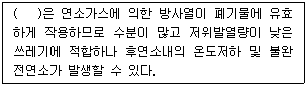
- 역류식
- 병류식
- 교류식
- 자류식
(정답률: 73%)
26. 다음 중 내륙매립공법에 해당되지 않는 것은?
- 샌드위치공법
- 셀공법
- 순차투입공법
- 압축매립공법
(정답률: 90%)
27. 시멘트 고형화법 중 시멘트 기초법에 관한 설명으로 옳지 않은 것은?
- 폐기물의 건조 또는 탈수가 필요하지 않다.
- 사용되는 시멘트의 양을 조절함으로써 폐기물 콘크리트의 강도를 높일 수 있다.
- 장치 이용이 어렵고, 고도의 기술이 필요하다.
- 낮은 pH에서 폐기물 성분의 용출 가능성이 있다.
(정답률: 64%)
28. 아래와 같이 운전되는 Batch Type 소각로의 쓰레기 kg 당 전체발열량(저위발열량+공기예열에 소모된 열량, kcal)은?
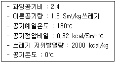
- 약 2⑤0
- 약 2250
- 약 2450
- 약 2650
(정답률: 알수없음)
29. 어떤 도시의 오염된 지하수의 Darcy 속도(유출속도)가 0.1 m/day이고, 유효 공극률이 0.4일 때 오염원으로부터 600m 떨어진 지점에 도달하는데 걸리는 시간은? (단, 유출속도 : 단위시간에 흙의 전체 단면적을 통하여 흐르는 물의 속도)
- 약 3.3년
- 약 4.4년
- 약 5.5년
- 약 6.6년
(정답률: 60%)
30. 혐기성 분뇨처리의 특징 중 가장 거리가 먼 것은?
- 분뇨처리에서 일반적으로 사용되는 공법이다.
- 유기물의 농도가 높을수록 유리하다
- 소화슬러지의 발생량이 호기성 처리보다 적은 편이다.
- 분해에 소요되는 기간이 짧다.
(정답률: 알수없음)
31. 오염된 토양 처리방법인 토양증기추출법 시스템의 장점으로 옳지 않은 것은?
- 굴착이 필요 없다.
- 짧은 기간에 설치할 수 있다.
- 오염물질의 독성을 감소시킨다.
- 다른 시약이 필요 없다.
(정답률: 59%)
32. 유해폐기물을 고화처리 하는 목적으로 가장 거리가 먼 것은?
- 폐기물을 다루기가 용이하다.
- 폐기물의 처분, 운반비용이 감소된다.
- 폐기물내 오염물질의 용해도가 감소한다.
- 폐기물 표면적의 감소에 따른 폐기물성분의 손실을 줄인다.
(정답률: 34%)
33. 어느 매립지의 침출수 농도가 반으로 감소하는데 4.4년이 걸린다면 이 침출수 농도가 90%분해되는데 걸리는 시간은? (단, 1차 반응기준)
- 10.2년
- 11.3년
- 12.8년
- 14.6년
(정답률: 64%)
34. 메탄올(CH3OH) 8kg을 완전 연소하는데 필요한 이론 공기량(Sm3)은? (단, 표준상태 기준)
- 35
- 40
- 45
- 50
(정답률: 90%)
35. 매립지로부터 침출수의 유출을 방지하기 위한 것으로 가장 적합한 것은? (단, 매립지내 물의 이동을 나타내는 Darcy의 법칙 기준)
- 투수계수는 증가시키고 수두차는 감소시킨다.
- 투수계수는 감소시키고 수두차는 증가시킨다.
- 투수계수 및 수두차를 감소시킨다.
- 투수계수 및 수두차를 증가시킨다.
(정답률: 알수없음)
36. 슬러지의 탈수 가능성을 표현하는 용어로 가장 적합한 것은?
- Uniformity coefficient
- Coefficient of permeability
- Effective diameter
- Specific resistance coefficient
(정답률: 알수없음)
37. 어느 도시에서 1일 수거되는 분뇨가 600kL, 수거차량의 용량은 3kL/대, 분뇨처리장에서 수거차량 1대의 분뇨투입시간이 30분, 분뇨처리장에서 수거차량 작업시간을 1일 8시간이라 할 때 분뇨처리장에서 수거차량의 분뇨투입을 위한 투입구 수는? (단, 기타조건은 고려하지 않음)
- 11개
- 13개
- 15개
- 17개
(정답률: 알수없음)
38. 유해폐기물 고화 처리시 흔히 사용하는 지표인 혼합율(MR)은 고화제 첨가량과 폐기물 양의 중량비로 정의된다. 고화 처리전 폐기물의 밀도가 1.0g/·cm3, 고화처리된 폐기물의 밀도가 1.3g/cm3 이라면 혼합율(MR)이 0.755 일 때 고화 처리된 폐기물의 부피변화율(VCF)은?
- 1.95
- 1.56
- 1.35
- 1.15
(정답률: 알수없음)
39. 매립시 표면차수막(연직차수막과 비교)에 관한 설명으로 가장 거리가 먼 것은?
- 매립지 필요범위에 차수재료로 덮힌 바닥이 있을 때 사용한다.
- 경제성에 있어서 차수막 단위면적당 공사비는 고가이나 총공사비는 싸다.
- 보수가능성면에 있어서는 매립 전에는 용이하나 매립 후에는 어렵다.
- 차수성 확인에 있어서는 시공시에는 확인되지만 매립 후에는 곤란하다.
(정답률: 92%)
40. 연료가 완전연소 시 이론공기량을 A0, 실제공기량을 A라고 할 때 과잉공기계수(m)을 구하는 식으로 옳은 것은?
- A0/A
- A/A0
- A-A0
- A·A0
(정답률: 알수없음)
3과목: 폐기물 공정시험 기준(방법)
41. 폐기물 시료채취를 위한 시료용기에 관한 설명으로 옳지 않은 것은?
- 시료용기는 무색경질의 유리병 또는 폴리에틸렌병, 폴리에틸렌백을 사용한다.
- 휘발성 저급 염소화 탄화수소류 실험을 위한 시료 채취시에는 무색경질의 유리병을 사용한다.
- 시료 용기에 파라핀지 등을 씌우지 않은 고무나 코르크마개를 사용하여 확실히 밀폐한다.
- 시료용기에는 채취책임자 이름을 기재하도록 한다.
(정답률: 82%)
42. 다음은 유리전극법에 의한 pH 측정 시 정밀도에 관한 설명이다. ( )안에 알맞은 것은?
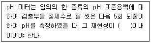
- ± 0.01
- ± 0.⑤
- ± 0.1
- ± 0.5
(정답률: 91%)
43. 자외선/가시선 분광법을 이용한 시안분석방법에 관한 설명으로 옳지 않은 것은?
- pH 2 이하의 산성에서 에틸렌다이아민테트라아세트산이나트륨을 넣고 가열증류한다.
- 포집된 시안이온을 중화하고 클로라민 T와 피리딘⋅피라졸론 혼합액을 넣어 적자색 510nm에서 측정한다.
- 잔류염소가 함유된 시료는 잔류염소 20mg 당 L-아스코빈산(10W/V%) 0.6mL를 넣어 제거한다.
- 황화합물이 함유된 시료는 아세트산아연용액(10W/V%)2mL를 넣어 제거한다.
(정답률: 46%)
44. 다음은 반고상 또는 고상 폐기물의 유리전극법에 의한 pH측정에 관한 설명이다. ( )안에 알맞은 것은?
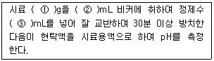
- ① 10, ② 50, ③ 25
- ① 10, ② 100, ③ 50
- ① 50, ② 50, ③ 25
- ① 50, ② 100, ③ 50
(정답률: 75%)
45. 원자흡수분광도법(공기-아세틸렌 불꽃)으로 크롬을 분설할 때, 철, 니켈 등의 공존물질에 의한 방해영향이 크다. 이 때 어떤 시약을 넣어 측정하는가?
- 황산나트륨
- 인산나트륨
- 질산나트륨
- 염산나트륨
(정답률: 82%)
46. 유도결합플라스마-원자발광분광법에 의한 카드뮴 분석방법에 관한 설명으로 옳지 않은 것은?
- 정량범위는 사용하는 장치 및 측정조건에 따라 다르지만 330nm에서 0.004~0.3mg/L 정도이다.
- 아르곤가스는 액화 또는 압축 아르곤으로서 99.99v/v%이상의 순도를 갖는 것이어야 한다.
- 시료용액의 발광강도를 측정하고 미리 작성한 검정곡선으로부터 카드뮴의 양을 구하여 농도를 산출한다.
- 검정곡선 작성시 카드뮴 표준용액과 질산, 염산, 정제수가 사용된다.
(정답률: 54%)
47. 기체크로마토그래피에 의한 유기인 분석방법에 관한 설명으로 옳지 않은 것은?
- 유리기구류는 노말헥산으로 닦아준 후 정제수로 세척하여 100℃ 정도에서 15 ~ 30분 건조한 후 식혀 알루미늄박으로 덮어 깨끗한 곳에 보관하여 사용한다.
- 폐기물 중의 유기인 화합물 중 이피엔, 파라티온, 메틸디메톤, 다이아지논 및 펜토에이트의 측정방법이다.
- 이 방법에 의한 정량한계는 사용하는 장치 및 측정조건에 따라 다르나 각 성분 당 0.00⑤ mg/L 이다.
- 이 시험기준은 기체크로마토그래프로 분리한 다음 질소인 검출기 또는 불꽃광도 검출기로 측정하는 방법이다.
(정답률: 73%)
48. 다음은 용출시험의 결과 산출 시 시료 중의 수분함량 보정에 관한 설명이다. ( )안에 알맞은 것은?
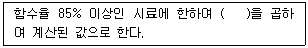
- 15 × {100-시료의 함수율(%)}
- 15 - {100-시료의 함수율(%)}
- 15 / {100-시료의 함수율(%)}
- 15 + {100-시료의 함수율(%)}
(정답률: 92%)
49. 순수한 물 500mL에 HCl(비중 1.2) 99mL를 혼합하였다. 이 용액의 염산농도는 중량비로 몇 % 인가?
- 약 16.1%
- 약 19.2%
- 약 23.8%
- 약 26.9%
(정답률: 80%)
50. 다음 설명하는 시료의 분할채취방법은?
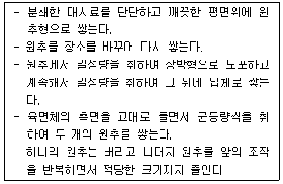
- 구획법
- 교호삽법
- 원추 4분법
- 분할법
(정답률: 알수없음)
51. 시료의 채취방법에 관한 설명으로 가장 적합한 것은?
- 시료의 양은 1회에 50g 이상 채취한다.
- 대형의 콘크리트 고형화물로써 분쇄가 어려울 경우에는 임의의 10개소에서 균등량 혼합하여 채취한다.
- 대상 폐기물의 양이 1톤 미만인 경우, 시료의 최소수는 6개 이다.
- 5톤 이상의 차량에 적재되어 있을 때에는 적재폐기물을 평면상에서 6등분 한 후 각 등분마다. 시료채취한다.
(정답률: 알수없음)
52. 자외선/기시선 분광법에 의한 구리 분석방법에 관한 설명으로 옳은 것은?
- 구리이온은 산성에서 다이에틸다이티오카르바민산나트륨과 반응하여 황갈색의 킬레이트 화합물을 생성한다.
- 구리이온은 산성에서 다이에틸다이티오카르바민산나트륨과 반응하여 적자색의 킬레이트 화합물을 생성한다.
- 구리이온은 알칼리성에서 다이에틸다이티오카르바민산나트륨과 반응하여 황갈색의 킬레이트 화합물을 생성한다.
- 구리이온은 알칼리성에서 다이에틸다이티오카르바민산나트륨과 반응하여 적자색의 킬레이트 화합물을 생성한다.
(정답률: 70%)
53. 기체크로마토그래프-질량분석법에 의한 유기인 분석방법에 관한 설명으로 옳지 않은 것은?
- 운반기체는 부피백분율 99.999 %이상의 헬륨을 사용한다.
- 질량분석기는 자기장형, 사중극자형 및 이온트랩형 등의 성능을 가진 것은 사용한다.
- 이온화방식은 양성자전해법을 사용하며 이온화에너지는 80 ~ 100 eV을 사용한다.
- 정량분석에는 선택이온검출법을 이용하는 것이 바람직하다.
(정답률: 64%)
54. 기체크로마토그래피(간이측정법)에 의한 폴리클로리네이티드비페닐(PCBs) 분석방법에 관한 설명으로 옳지 않은 것은?
- 이 방법에 따라 실험한 경우 정량한계는 0.5mg/L 이상이다.
- 실리카겔 컬럼 정제는 산, 페놀, 염화페놀, 폴리클로로페녹시페놀 등의 극성화합물을 제거하기 위하여 사용한다.
- 사용 전에 실리카겔은 정제하고 활성화시켜야 한다.
- ECD를 사용하여 PCBs을 측정할 때 프탈레이트가 방해할 수 있는데 이는 플라스틱 용기를 사용함으로서 최소화 할 수 있다.
(정답률: 37%)
55. 다음은 자외선/가시선 분광법으로 구리를 분석할 때의 간섭물질에 관한 설명이다. ( )안에 알맞은 것은?
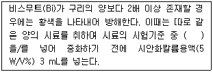
- 수산화나트륨(4W/V%)
- 과산화수소수(3W/V%)
- 황산(1+5)
- 암모니아수(1+1)
(정답률: 40%)
56. 중량법에 의한 기름성분 분석방법에 관한 설명으로 옳지 않은 것은?
- 시료 적당량을 분별깔때기에 넣고 메틸오렌지용액(0.1W/V%)을 2 ~ 3방울 넣고 황색이 적색으로 변할 때까지 염산(1+1)을 넣어 pH 4 이하로 조절한다.
- 시료가 반고상 또는 고상 폐기물인 경우에는 폐기물의 양에 약 2.5배에 해당하는 물을 넣어 잘 혼합한 다음 pH 4 이하로 조절하여 상등액으로 한다.
- 노말헥산 추출물질의 함량이 5 mg/L 이하로 낮은 경우에는 5 L 부피 시료병에 시료 4 L를 채취하여 염화철(Ⅲ)용액 4 mL를 넣고 자석교반기로 교반하면서 탄산나트륨용액(20 W/V %)을 넣어 pH 7 ~ 9로 조절한다.
- 증발용기 외부의 습기를 깨끗이 닦고 (80 ± 5) ℃의 건조기 중에 2시간 건조하고 황산 데시케이터에 넣어 정확히 30분간 식힌 후 무게를 단다.
(정답률: 알수없음)
57. 유도결합플라스마-원자발광분광법에 의한 금속류 분석방법에 관한 설명으로 옳지 않은 것은?
- 시료를 고주파유도코일에 의하여 형성된 석영 플라스마에 주입하여 1000 ~ 2000 K에서 들뜬 원자가 바닥상태로 이동할 때 방출하는 발광선 및 발광강도를 측정한다.
- 대부분의 간섭 물질은 산 분해에 의해 제거된다.
- 물리적 간섭은 특히 시료 중에 산의 농도가 10v/v%이상으로 높거나 용존 고형물질이 1500 mg/L 이상으로 높은 반면, 검정용 표준용액의 산의 농도는 5 %이하로 낮을 때에 발생한다.
- 간섭효과가 의심되면 대부분의 경우가 시료의 매질로 인해 발생하므로 원자흡수분광광도법 또는 유도결합플라즈마-질량분석법과 같은 대체방법과 비교하는 것도 간섭효과를 막는 방법이 될 수 있다.
(정답률: 64%)
58. 자외선/가시선 분광법에 의한 비소의 측정방법으로 옳은 것은?
- 적자색의 흡광도를 430nm에서 측정
- 적자색의 흡광도를 530nm에서 측정
- 청색의 흡광도를 430nm에서 측정
- 청색의 흡광도를 530nm에서 측정
(정답률: 70%)
59. 자외선/가시선 분광법에 사용되는 분석기기 및 기구 등에 관한 설명으로 옳지 않은 것은?
- 흡광광도 분석장치는 광원부, 파장선택부, 시료부 및 측광부로 구성된다.
- 광원부의 광원으로 텅스텐램프는 주로 자외부의 광원으로 사용된다.
- 시료액의 흡수파장이 약 370 nm 이하일 때는 석영 흡수셀을 사용한다.
- 흡수셀을 급히 사용하고자 할 때는 물기를 제거한 후 에틸알코올로 씻고 다시 에틸에테르로 씻은 다음 드라이어로 건조해서 사용한다.
(정답률: 50%)
60. 원자흡수분광공도법에 의한 금속류 분석방법에 관한 설명으로 옳지 않은 것은?
- 낮은 농도의 구리, 납, 카드뮴은 암모늄 피롤리딘다이티오카바메이트와 착물을 생성시켜 메틸아이소부틸케톤으로 추출한다.
- 화학물질이 공기-아세틸렌 불꽃에서 분자상태로 존재하여 낮은 흡광도를 보일 때가 있는데, 이는 불꽃의 온도가 너무 높아 원자화가 일어나기 때문이다.
- 시료 중에 알칼리금속의 할로겐 화합물을 다량 함유하는 경우에는 분자 흡수나 광산란에 의하여 오차를 발생하므로 추출법으로 카드뮴을 분리하여 실험한다.
- 염이 많은 시료는 묽혀 분석하거나, 메틸아이소부틸케톤 등을 사용하여 추출하여 분석한다.
(정답률: 알수없음)
4과목: 폐기물 관계 법규
61. 폐기물 처리 담당자 등은 3년마다 교육을 받아야 하는데 폐기물처분시설의 기술관리인이나 폐기물처분시설의 설치자로서 스스로 기술관리를 하는 자에 대한 교육기관에 해당하지 않는 것은?
- 한국환경공단
- 환경보전협회
- 한국폐기물협회
- 국립환경인력개발원
(정답률: 알수없음)
62. 폐기물처리시설의 검사항목기중으로 거리가 먼 것은? (단, “멸균분쇄시설”의 “정기검사”)
- 멸균능력의 적절성 여부
- 분쇄시설의 작동상태
- 자동기록장치의 작동상태
- 폭발사고와 화재 등에 대비한 구조의 적절유지
(정답률: 39%)
63. 폐기물처리업자 등이 보존하여야 하는 폐기물 발생, 배출 처리상황 등에 관한 내용을 기록한 장부의 보존기간(최종기재일 기준)으로 옳은 것은?
- 1년
- 2년
- 3년
- 5년
(정답률: 92%)
64. 지정폐기물(의료폐기물 제외)의 수집⋅운반 차량 적재함의 양쪽 옆면에 회사명 및 전화번호 등을 표기하는 글자의 색상은?
- 회색
- 검은색
- 노란색
- 청색
(정답률: 47%)
65. 다음 중 의료폐기물의 종류에 해당되지 않는 것은?
- 격리의료폐기물
- 위해의료폐기물
- 특정의료폐기물
- 일반의료폐기물
(정답률: 알수없음)
66. 폐기물매립시설의 사후관리 업무를 대행할 수 있는 자는? (단, 그 밖의 경우 등을 고려하지 않음)
- 지방환경청
- 한국폐기물학회
- 한국환경공단
- 한국환경기술인연합회
(정답률: 87%)
67. 폐기물처리시설 중 중간처분시설인 기계적 처분시설과 그 동력기준으로 옳지 않은 것은?
- 용융시설(동력 10마력 이상인 시설로 한정한다.)
- 압축시설(동력 10마력 이상인 시설로 한정한다.)
- 절단시설(동력 10마력 이상인 시설로 한정한다.)
- 증발⋅농축시설(동력 10마력 이상인 시설로 한정한다.)
(정답률: 73%)
68. 폐기물 처리가격의 최고액보다 높거나 최저액보다 낮은 가격으로 폐기물을 수탁한 자에 대한 과태료 부과기준으로 옳은 것은?
- 1천만원 이하의 과태료
- 500만원 이하의 과태료
- 200만원 이하의 과태료
- 100만원 이하의 과태료
(정답률: 70%)
69. 다음은 제출된 폐기물 처리사업계획서의 적합통보를 받은자가 천재지변으로 인해 정해진 기간 내에 허가신청을 하지 못한 경우 실시하는 연장시간기준에 대한 설명이다. ( )안에 알맞은 것은?
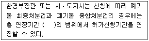
- 6개월
- 1년
- 2년
- 3년
(정답률: 알수없음)
70. 지정폐기물의 분류번호가 07-00-00 인 지정폐기물은?
- 폐석면
- 폐유독물
- 폴리클로리네이티드비페닐 함유 폐기물
- 폐유
(정답률: 50%)
71. 관리형 매립시설에서 발생하는 침출수의 수소이온농도 배출허용기준으로 옳은 것은? (단, 가지역 기준)
- 5.8 ~ 8.0
- 5.3 ~ 8.5
- 5.0 ~ 8.6
- 4.8 ~ 8.6
(정답률: 알수없음)
72. 국가 폐기물 관리 종합계획에 포함되어야 하는 사항과 가장 거리가 먼 것은?
- 재원 조달 계획
- 부문별 폐기물 관리 정책
- 폐기물 관리계획의 검토 및 평가
- 종합 계획의 기조
(정답률: 알수없음)
73. 폐기물의 수집⋅운반⋅보관⋅처리에 관한 구체적 기준 및 방법에 관한 설명으로 옳지 않은 것은?
- 사업장일반폐기물배출자는 그의 사업장에서 발생하는 폐기물을 보관이 시작되는 날부터 90일을 초과하여 보관하여서는 아니된다.
- 지정폐기물(의료폐기물 제외)수집⋅운반차량의 차체는 노란색으로 색칠하여야 한다.
- 음식물류 폐기물 처리시 가열에 의한 건조에 의하여 부산물의 수분함량을 50% 미만으로 감량하여야 한다.
- 폐합성고분자화합물은 소각하여야 하지만, 소각이 곤란한 경우에는 최대지름 15센티미터 이하의 크기로 파쇄⋅절단 또는 용융한 후 관리형 매립시설에 매립할수 있다.
(정답률: 50%)
74. 다음 중 폐기물 매립처리시설의 사후관리계획서에 포함되어야 하는 내용으로 가장 거리가 먼 것은?
- 폐기물처리시설 설치⋅사용내용
- 사후관리 추진일정
- 사후관리 소요비용 내역
- 구조물과 지반 등의 안정도 유지계획
(정답률: 42%)
75. 지정폐기물 중 의료폐기물 처리에 관한 구체적 기준 및 방법으로 옳지 않은 것은? (단, 의료폐기물 전용용기 사용의 경우)
- 한 번 사용한 전용용기는 다시 사용하여서는 아니된다.
- 전용용기 중 봉투형 용기의 재질은 합성수지류로 한다.
- 봉투형 용기에 담은 의료폐기물의 처리를 위탁하는 경우에는 상자형 용기에 다시 담아 위탁하여야 한다.
- 봉투형 용기에는 그 용량의 90퍼센트 미만으로 의료폐기물을 넣어야 한다.
(정답률: 73%)
76. 다음 중 폐기물처리시설 설치⋅운영자, 폐기물처리업자, 폐기물과 관련된 단체, 그 밖에 폐기물과 관련된 업무에 종사하는 자가 폐기물에 관한 조사연구⋅기술개발⋅정보보급 등 폐기물분야의 발전을 도모하기 위하여 환경부장관의 허가를 받아 설립할 수 있는 단체는?
- 한국폐기물협회
- 한국폐기물학회
- 폐기물관리공단
- 폐기물처리공제조합
(정답률: 59%)
77. 다음은 폐기물 인계⋅인수 내용의 입력방법 및 절차이다. ( )안에 알맞은 것은?
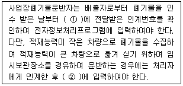
- ① 1일 이내, ② 1일 이내
- ① 3일 이내, ② 1일 이내
- ① 1일 이내, ② 3일 이내
- ① 3일 이내, ② 3일 이내
(정답률: 60%)
78. 폐기물관리법상 벌칙기준 중 “7년 이하의 징역이나 5천만원 이하의 벌금”에 처하는 행위를 한 자는?
- 대행계약을 체결하지 아니하고 종량제 봉투를 제작⋅유통한 자
- 폐기물처리시설의 사후관리를 제대로 하지 않아 받은 시정명령을 이행하지 않은 자
- 지정된 장소 외에 사업장폐기물을 버리거나 매립한 자
- 거짓이나 그 밖의 부정한 방법으로 폐기물처리업 허가를 받은 자
(정답률: 알수없음)
79. 다음 중 환경부령으로 정하는 음식물류 폐기물(농⋅수⋅축산물류 폐기물을 포함한다.) 배출자에 해당하지 않는 자는?
- 농수산물유통 및 가격안정에 관한 법률에 따른 농수산물도매시장⋅농수산물공판장⋅농수산물종합유통센터를 개설⋅운영하는 자
- 집단급식관리법에 의한 사회복지시설의 집단급식소를 운영하는 자
- 관광진흥법에 따른 관광숙박업을 영위하는 자
- 식품위생법에 따른 식품접객업 중 휴게음식점영업 및 일반음식점영업을 하는 자 중 특별자치도 또는 시⋅군⋅구의 조례로 정하는 자
(정답률: 46%)
80. 다음 중 기술관리인을 두어야 할 “대통령령으로 정하는 폐기물처리시설”에 해당되지 않는 것은?
- 지정폐기물을 매립하는 시설로서 면적이 3,500m2인 시설
- 멸균분쇄시설로서 시간당 처분능력이 50kg인 시설
- 압축⋅파쇄⋅분쇄 또는 절단시설로 1일 처분능력이 150ton인 시설
- 사료화⋅퇴비화 또는 연료화시설로서 1일 재활용 능력이 5ton인 시설
(정답률: 알수없음)
압축비 = 원래 용적 / 압축 후 용적
여기서, 용적 감소율(Volume reduction)은 다음과 같이 계산할 수 있습니다.
용적 감소율 = (원래 용적 - 압축 후 용적) / 원래 용적
문제에서 용적 감소율이 45%이므로, 다음과 같이 식을 세울 수 있습니다.
0.45 = (원래 용적 - 압축 후 용적) / 원래 용적
이를 정리하면,
압축 후 용적 = 0.55 x 원래 용적
따라서, 압축비는 다음과 같이 계산할 수 있습니다.
압축비 = 원래 용적 / 압축 후 용적
= 원래 용적 / (0.55 x 원래 용적)
= 1 / 0.55
≈ 1.8
따라서, 정답은 "약 1.8"입니다.